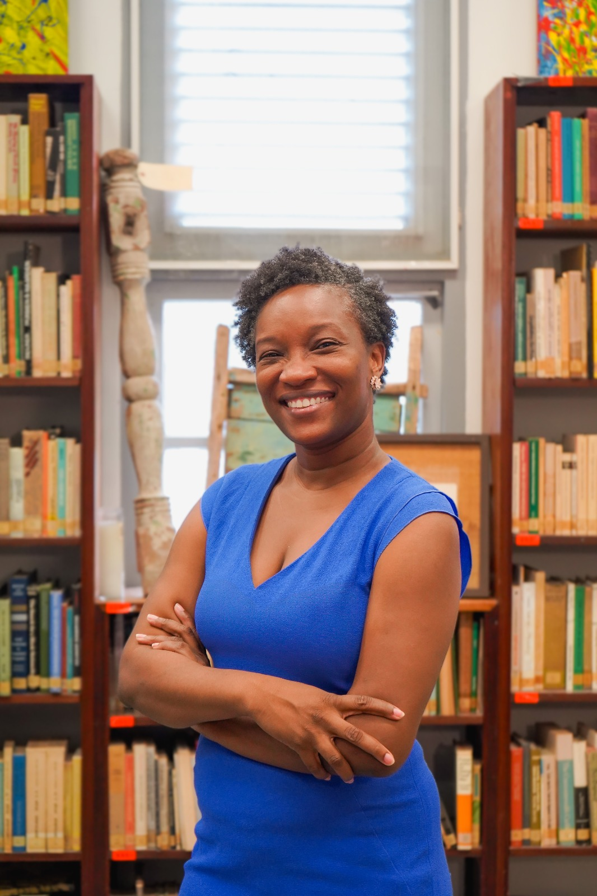

Kiko tabata e balor di Wilfrido Ortega su trabou pa desaroyo di idioma i literatura Papiamentu?
WILFRIDO ORTEGA · ARCHIVO LITERARIO
Tokante.
E bibliografia aki ta parti di un proseso pa investigá trabou di e outor Wilfrido Ortega. Apesar di ta menshoná diferente biaha komo un di e outornan mas produktivo di Kòrsou, no ta tin un lista kompletu, aksesibel, di kiko tur Wilfrido a produsí.
01 / ORIGEN
Motivashon
1958 — 2013
Kórsou ta tin mas outor ku a bende nan bukinan di porta pa porta i ku a skibi novelita. Amador Nita, Tuyuchi, Guillermo Rosario, Nilo Kleinmoedig, Edward de Jongh ta algun di nan. E echo ku Wilfrido a skibi solamente na Papiamentu, a publiká, ilustrá i a distribuí su bukinan di un forma struktural for di 1958 te ku 2013, ta un di e rasonnan. E falta di informashon ku tin di e trabou di Wilfrido Ortega, esei a chispa e kuriosidat.
E bibliografia ta un instrumento pa sigui investigá.
Ki impakto Wilfrido su konsistensia ta tin pa e komunidat di Kòrsou?
Kiko di kombibensia di tur tempu por saka for di e storianan di Wilfrido?
03 / KAPASITASHON
Trayektonan ku a aportá
E bibliografia digital aki ta resultado di diferente trayekto di kapasitashon personal ku Nifa a partisipá na dje den e último añanan:
Each One Teach One
Each One Teach One di Fonds voor CultuurParticipatie. E trayekto aki ta tin komo meta pa traha riba abilidatnan pa redigí i publiká. Durante e trayekto a para ketu na e publikashon ‘Destino di Amor’ skibí pa Ortega.
Caribbean Digital Scholarship
Summer Institute
Caribbean Digital Scholarship Summer Institute. E trayekto aki ta tin komo meta kon pa publiká digital. Durante e trayekto a traha entre otro ku e plataforma GitHub pa por presentá e.m. archivo. Pa a asistí na e trayekto Digitall Caribbean d.k.k. Cultuurfonds Caribisch Gebied a ko-finansiá e biahe pa Jamaica durante e proyekto Digital Connections.

ARCHIVO LITERARIO · KÒRSOU
04 / INVESTIGADÓ
Nifa Ansano
Nifa Ansano ta un outor kurioso pa e temanan ku e ta skibi, pero tambe pa historia di Kòrsou, pashoná pa literatura. El a aportá na diferente proyekto pa promové outornan i literatura di Kòrsou. Aktualmente e ta laborá na Fundashon NAAM i ta tesorero di e plataforma pa promove literatura den diaspora patruli.org
Fundashon NAAMpatruli.org ↗